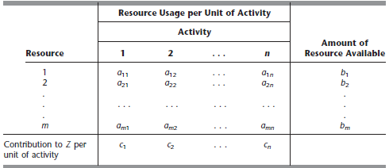
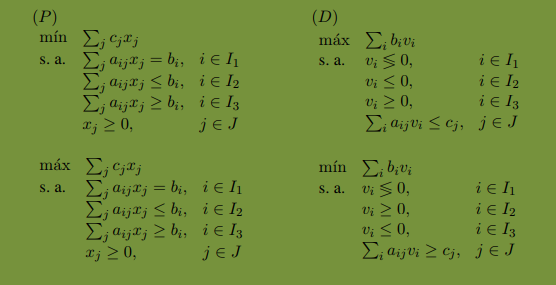

Programación Lineal
Introducción
La programación lineal es una herramienta matemática que nos proporciona una forma modelar el sistema y selelcionar el valor de las variables controlables que permiten un funcionamiento óptimo del sistema.
Construcción de modelos
-
Definir unas variables, de estado, de control, de salida.
-
Variables no controlables se modelan como variables aleatorias
Determinar los parámetros
-
Estudiar las relaciones entre los distintos elementos y representarlos mediante expresiones matemáticas.
Programación lineal
La Programación Lineal estudia la optimización de una función lineal en presencia de restricciones lineales.
En un problema general podemos encontrar
$m$ recursos
$n$ actividad
nivel de actividad
rendiemiento global $Z$
Denotamos varios componentes de un modelo de programación con los siguientes siguientes simbolos
-
$Z$ = valor de la medida global del rendimiento, Normalmente puede interpretarse como el coste o el beneficio.
-
$x_j$ = nivel de actividad $j$ para $j = 1,2,…,n$
-
$c_j$ = el impacto en la funcion objetivo por unidad de actividad j.
-
$b_i$ = cantidad de recurso que está disponible para la asignación a actividades.
-
$a_{ij}$ = cantidad de recursos $i$ consumido por cada unidad de actividad $j$
-
$x_1, x_2, x_3, x_4$ son llamadas las variables de decisión, cada variable de decision de un PL (x1, . . . , xn) normalmente puede interpretarse como la eleccion del nivel de una actividad.

Los $c_j$, $b_i$, $a_{ij}$ también se refieren como los párametros, algunos de ellos podrían ser estimaciones del valor exacto.
Forma estándar del modelo
$$
\begin{split}
\max Z &= \sum_j{c_jx_j}\\\\
Sujeto
, a \quad
\sum_{i}{a_{ij}}x_i &< b_i \forall{j}\\\\
\end{split}
$$
Tipos de puntos en un PL
un punto factible es una solución que cumple todas las restricciones.
un punto no factible es una solucón que se viola al menos una restricción.
un punto de frontera es una solución que al menos una de desigualdad se cumple la igualdad.
un punto interior Punto factible que no es punto frontera.
un punto estremo or CPF corner-point feasible es la solución que se encuentra en la intersección de dos o mas línea, son los vértices del conjunto factible.
Una solución óptima es punto factible con el mejor valor de la función objetivo.
La región factible es la colección de todas los puntos factibles.
Observación
Un PL puede tener 0, 1, ó infinitos puntos óptimos. El mejor punto extremo debe ser una solución óptima.
Modelos de asignación de recursos
Repartimos un recursos entre varias actividades.
Variables de decisión
Determinan qué cantidad de recursos asignamos a cada actividad.
Restricciónes de repartos
Son restricciones de igualdad.
$$
\begin{split}
\min z(x) &= \sum_i {c_i
x_i}\\\\
s.a. A\textbf{x}&=\textbf{b}\\\\
x
&\ge 0\\\\
\end{split}
$$
Modelo de Asignación - Cerveza
Modelo de Asignación - Petroquimica
Modelo de Asignación - Refinería
Modelos de mezclas
Los combinamos los recursos
Variables de mezclas
Determinan qué cantidad de cada recurso incluimos en la mezcla.
Restricciones de composición
Determinan cotas superiores y/o inferiores a las propiedades de la mezcla resultante.
Modelo de mezclas - Siderúrgica
Modelos de planificación de operaciones
Debemos decidir qué hacer, cuando, y donde.
Variables de decisión de gran magnitud
Las variables de decisión enteras y de gran magnitud se suelen tratar como variables continuas para simplificar la solución del problemas.
Restricciones de balance
El flujo entrante de materias primas debe ser igual al flujo saliente de productos manufacturados (ecuación de balance).
Modelos de planificación de operaciones - Producción
Modelo de planificación de operaciones - Transporte
Modelo de planificación de operaciones - Transbordo
Modelo de planificación de operaciones - Sumistradora
Modelo de planificación de operaciones - Residuos
Modelo de planificación de operaciones - Accion
Modelo de planificación de operaciones - Agricultora
Modelos de gestión de personal
Los modelos de gestión de operaciones deciden qué tarea realizar en cada momento de forma que los recursos sean usados eficientemente, decidimos qué tipo de empleado y cuántos de cada tipo deben realizar cada tarea.
Restricciones de cubrimiento
En la planificación de los turnos debemos asegurar que el número de operario asignados cubre las necesidades de cada periodo. Para ello imponemos la siguiente restricción de cubrimiento.
$$
\sum_{turnos} (Producción , por , operario) * (Operarios , en
, servicio) \ge , del , periodo
$$
Modelo de gestión de personal - Jornada
Modelos de planificación multiperiodo
Planificar en un horizonte de tiempo que abarca varios periodos, medelos dinámicos.
Variables de decisión por periodo
Muchas variables de decisión tiene una versión para cada periodo
Restricciones de balace
Describen la evolucion temporal de una magnitud
$$
Situación_{t} + Cambios_{t} = Situación_{t + 1}
$$
Modelos de planificación multiperiodo - Piensos
Resolución geométrica de un PL
Consideramos un PL de dimesión dos, cuya función objectivo es
$$
z(x) = c^{T}x
$$
donde $c^{T} = (c_1, c_2)$ y $x = (x_1, x_2) $.
Para todos los puntos sobre la recta
$$
R_k = c^{T}x = k
$$
El valor de la función objetivo es $k$.
La rectas $R_k$ son perpendiculares a $c$ y por tanto paralelas entre ellas.
La curva de nivel $k$ de $z(x)$ es la curva que cumple $z(x) = k$. Y las curvas de nivel de $z(x) = k$ son las rectas $R_k$ para todo $k \in \mathbb{R}$.
La región factible de PL corresponde a la región determinada por los puntos que cumplen todas las restricciones.
Paso a seguir para la resolución de forma gráfica
- Representar el conjunto factible
- Representar el vector $c$
-
Representar la recta $R_{k*} = c^{T}x = k*$ tal que
a. Es perpendicular a $c$
b. Intersecta el conjunto factible
c. $k*$ tiene el valor máximo posible - Elegir un $vértice$ factible que pertenezca a $R_k*$ y que llamamos $x*$
- Determinar las coordenadas exactas de $x*$ resolviendo el sistema lineal asociado a las restricciones que determinan $x*$
- El punto óptimo del PL es $x*$ y el beneficio óptimo es $z(x)$.
- En caso de minimizar hacemos lo mismo salvo que en el anterior algoritmo debemos sustitutir $c$ por $-c$.
Postoptimización
El análisis de sensibilidad permite conocer si la solución obtenida es sensible a pequeños cambios de los parámetros.
- Recursos limitados: Dado un b ≥ 0, una restriccion ≤ normalmente corresponde a un límite en la disponibilidad de un recurso.
- Satisfaccion de demandas: Dado un b ≥ 0, una restriccion ≥ normalmente corresponde a la satisfaccion de una demanda.
- Restricciones de igualdad: Una restriccion de igualdad puede interpretarse como dos restricciones de desigualdad simultaneas y opuestas.
- Restriccion de no negatividad: x ≥ 0: Aunque es una restriccion, normalmente se interpreta como una declaracion de un tipo de variable.
Sensibilidad cualitativa
Aumento del conjunto factible
Si el nuevo conjunto factible incluye al conjunto factible inicial, el optimo no cambia o mejora.
Reduccion del conjunto factible
Si el nuevo conjunto factible esta incluido en el conjunto factible inicial, el optimo no cambia o empeora.
Cambios en Right-Hand Side
Relajar una restriccion
Modificar dicha restricción de forma que el conjunto factible aumente, el óptimo o no cambia o mejora.
Tensar una restriccion
Modificar dicha restricción de forma que el conjunto factible disminuya, el óptimo o no cambia o empeora.
Cambios en A
Inclusion de nuevas restricciones
Si en un PL incluimos nuevas restricciones el optimo ser a igual o peor.
Eliminacion de restricciones
Si en un PL eliminamos restricciones el optimo ser a igual o mejor.
Inclusion de nuevas variables
Si en un PL incluimos nuevas variables el optimo ser a igual o mejor.
Eliminacion de variables
Si en un PL eliminamos variables el optimo ser a igual o peor.
Sensibilidad cuantitativa
El problema dual es un problema de optimizacion auxiliar que puede ser utilizado para cuantificar la sensibilidad de la solucion primal (óptima) ante cambios en los parametros.
Variables duales
Son las variables del problema dual. Tenemos una variable dual $v_i$ por cada restriccion del problema primal, $i \in I = {1, . . . , m}$.
Cada variable dual optima representa la tasa de cambio del coste optimo respecto a cambios en el termino de la derecha de la restricción correspondiente. La variable dual óptima $v^*_i$ puede interpretarse como precio sombra del producto o recurso asociado a la restricción i.
Cada variable dual optima representa la pendiente de $C_i$($b_i$):
$$
v^{∗}i = C^{‘}{i}(bi)
$$
(excepto en los puntos no derivables).
El problema dual nos dara sólo los valores de la tasa de cambio del coste optimo correspondiente al b concreto de nuestro problema
$$
C^{‘}_1(b_1), . . . , C^{‘}_m(b_m).
$$
Signo de una variable dual
| Primal | Restriccion i $\le$ | Restriccion i $\ge$ | Restriccion i = |
|---|---|---|---|
| Min | $v_i \le 0$ | $v_i \gt 0$ | Sin restricción de signo |
| Max | $v_i \gt 0$ | $v_i \le 0$ | Sin restricción de signo |
Formulación del problema dual

Teoremas de dualidad
Un PL versión minimización (P) y su dual (D)
Teorema débil de dualidad
La función objetivo dual en $\overline{v}$ es una cota inferior a la función objetivo primal en $\overline{v}$ y viceversa
Teorema fuerte de dualidad
Si cualquiera de las dos soluciones es óptima, la otro también y además sus valores óptimos respectivos coinciden.
Casos factible, infactible y no acotado
- La función objetivo de (P) tiene un valor óptimo finito => La función objetivo de (D) tiene un valor óptimo finito.
- La función objetivo de (P) no está acotada (inferiormente) => El problema (D) es infactible.
- La función objetivo de (D) no está acotada (superiormente) => El problema (P) es infactible.
Programación Entera
La PLE corresponde a los problemas de Programacion Lineal (PL) donde además se impone la condición de que algunas o todas las variables sean enteras.
Problema de la mochila
Objetivo
seleccionar un subconjunto óptimo de objetos que maximize la utilidad total
Variable de decisión
$$
x_j =
\begin{cases}
& 1 \quad \text{si el objeto j es seleccionado} \\\\
& 0 \quad \text{en otro caso}\\\\
\end{cases}
$$
Formulación
$$
\begin{split}
\max & \quad c^Tx\\\\
s.t &
\quad Ax \le b\\\\
& \quad x \in {0,1}^n\\\\
\end{split}
$$
Modelos de asignacion del presupuesto
seleccionar el mejor reparto de un presupuesto entre n proyectos o inversiones bajo m restricciones.
Modelos de asignación
Objetivo
Asignar eficientemente un conjunto de trabajadores a un conjunto de tareas.
Variable de decisión
$$
x_{ij} =
\begin{cases}
& 1 \quad \text{si el trabajador i se asigna a la tarea j} \\\\
& 0 \quad \text{en otro caso}\\\\
\end{cases}
$$
Restricciones
$$
\begin{split}
\sum_{i=1}^{n}{x_{ij}} &= 1
\quad \text{Cada tarea se realiza una vez}\\\\
\sum_{j=1}^{n}{x_{ij}}
&= 1 \quad \text{Cada trabajador realiza una tarea}\\\\
\end{split}
$$
Formulación
$$\min \sum_i{\sum_j{c_{ij}x_{ij}}}$$
Modelos de asignación generalizada
Es una generalización del modelo anterior. Cada trabajador puede hacer más de una tarea simultáneamente
Formulación
$$
\begin{split}
z &= \min
\sum_i{\sum_j{c_{ij}x_{ij}}}\\\\
\sum_{i=1}^{n}{x_{ij}}
&= 1 \quad \text{Cada tarea se realiza una vez}\\\\
\sum_{j=1}^{n}{a_{ij}x_{ij}}
&\le b_i \quad \text{La capacidad maxima de cada
trabajador}\\\\
x_{ij} &\in {0,1}\\\\
\end{split}
$$
Modelos de la optimización discreta
Alguna o todas variables de un problema deben tomar valores enteros
Problema de cubrimiento y partición
Parametros
$$
a_{ij} =
\begin{cases}
& 1 \quad i \in S_j\\\\
& 0 \quad \text{en otro caso}\\\\
\end{cases}
$$
Restricciones
Problema de cubrimiento
$$
\sum_{i=1}^{n}{a_{ij}x_{ij}} \ge 1 \quad \text{Cada
objeto debe pertenecer al menos a un conjunto}\\\\
$$
Problema de partición
$$
\sum_{i=1}^{n}{a_{ij}x_{ij}} = 1 \quad \text{Cada
objeto debe pertenecer exactamente a un conjunto}\\\\
$$
Diseño de redes
Objetivo
Decidir qué arcos de una red abrimos de forma que el coste de servicio más costes fijos sea mínimo.
Formulación
- $A$ conjunto de arcos de la red
- $ij$ par de indices para los arcos de $A$
- $V$ conjunto de nodos de la red
- $k$ indice para los nodos de $V$
- $x_{ij}$ flujo del arco $ij$
- $y_{ij}$ es 1 si decidimos conectar $i$ con $j$
- $b_{k}$ demanda de k
- $c_{ij}$ coste por unidad de flujo
- $f_{ij}$ coste de conectar i con j
- $u_{ij}$ capacidad del arco $ij$
$$
\min_{x,y} \quad z = \sum_{ij \in A}{c_{ij}x_{ij}} +
\sum_{ij \ in A}{f_{ij}y_{ij}} \quad \text{coste total}\\\\
s.a.
\quad \sum_{ik \in A}{x_{ik}} - \sum_{kj \in A}{x_{kj}} = b_k
\quad \text{para todo k. (demanda)}\\\\
0 \le x_{ij} \le
u_{ij}y_{ij} \quad \text{para todo ij (capacidad)}\\\\
y_{ij} \in
{0,1} \text{para todo ij}
$$
Localización de plantas
Objetivo
Decidi qué plantas abrimos de forma que el coste de explotación sea mínimo.
Formulación
$$
\min_{x,y} \quad z = \sum_{ij}{c_{ij}d_{j}x_{ij}} +
\sum_{i}{f_{i}y_{i}} \quad \text{coste total}\\\\
s.a.
\sum_{i}{x_{ij}} = 1 \quad \text{satisfaccion de la demanda para
todo j}\\\\
\sum_j{d_j x_{ij} \le u_i y_i} \quad
\text{restricciones de capacidad para todo ij}\\\\
x_{ij} \ge
0\\\\
y_{ij} \in {0,1}\\\\
$$
Problema de viajante
Variable de decisión
$$
a_{ij} =
\begin{cases}
& 1 \quad \text{si el agente va de la ciudad i a la ciudad
j}\\\\
& 0 \quad \text{en otro caso}\\\\
\end{cases}
$$
Restricciones
El agente debe salir de todas las ciudades
$$
\sum_{i}^{n}x_{ij} = 1\\\\
$$
El agente debe llegar a todas las ciudades
$$
\sum_{j} x_{ij} = 1\\\\
$$
Eliminación de subciclos
$$
\sum_{i \in S}{\sum_{j \not\in S}} x_{ij} \ge 1
$$
Modelado de condiciones lógica
Selección múltiple
Al menos dos tipos seleccionados
$$
\sum_i{\delta_i} \ge 2
$$
Exactamente dos tipos seleccionados
$$
\sum_i{\delta_i} = 2
$$
A lo sumo dos tipos seleccionados
$$
\sum_i{\delta_i} \le 2
$$
Costes fijos
$$
\delta * coste
$$
Variables semicontinuas
$$
minimo\delta \le x \le maximo\delta
$$
Implicaciones
1 o 2 -> 3
$$\delta_1 + \delta_2 \le 2*\delta_3$$
1 y 2 -> no 3
$$\delta_1 + \delta_2 \le 2 - \delta_3$$
Incompatibilidad
$$\delta_1 + \delta_2 \le 1$$
Disyunción
$\sum_i{a_ix_i} \le a$ o $\sum_j{b_jy_j} \ge b$
Se puede modelar utilizado
$\sum_i{a_ix_i} \le a + M\delta$ y $\sum_j{b_jy_j} \ge b + m(1-\delta)$
con $M$ suficientemente grande y $m$ suficientemente pequeño
Decisiones Multiobjetivo
En muchos problemas de decisión, es muy complicado o no es imposible transformar todos los objetivos involucrados en un único objetivo
Puntos eficientes
También se denomina punto de pareto, si al moverlo dentro de la región factible para mejorar algún objetivos, tenemos que empeorar al menos otro objetivo.
Optimización multiobjetivo por suma ponderada de objetivos
$$
min \quad z_1(x)\\\\
\vdots\\\\
min \quad
z_m(x)\\\\
$$
en la suma ponderada de objetivos
$$
min z(x) = \sum_{i}\gamma_i z_i(x)
$$
donde cada peso $\gamma_i$ es un escalar estrictamente positivo para todo $i$.
Optimizacion multiobjetivo por metas
Tranforma siguiente problema
$$
meta \quad z_1(x) \le m_1\\\\
\vdots\\\\
meta \quad
z_m(x) \le m_m\\\\
$$
en
$$
min z(d) = \sum_{i}\gamma_i z_i(d_i)\\\\
s.a.
\quad
z_1(x) - d_1 \le m_1\\\\
\vdots\\\\
,,,,,,,,\quad
z_m(x)
- d_m \le m_m\\\\
$$
Reference
- Introduction to Operations Research pag. 32-34